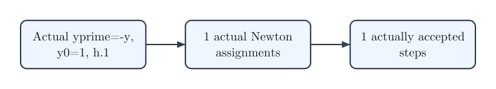
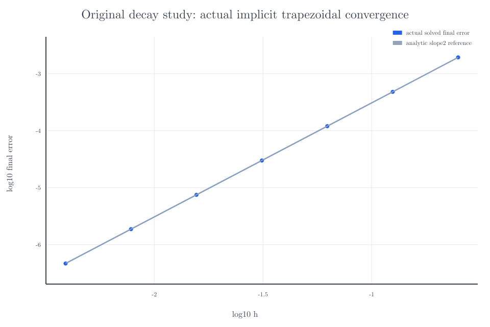
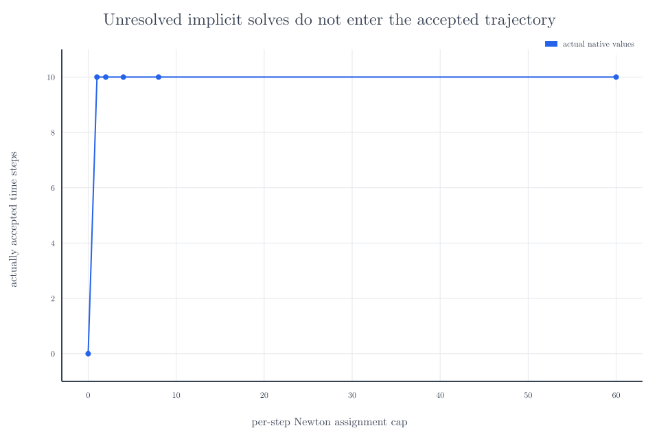
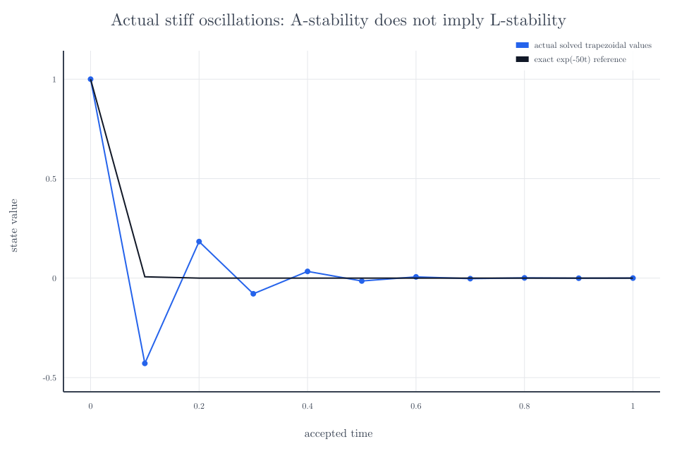

Implicit trapezoidal integration: actual Newton residuals and accepted steps
Abstract
The trapezoidal rule is second order and A-stable for solved linear test equations, but each nonlinear implicit step still needs a successful numerical solve. Actual predictor, derivative and residual histories retain the original decay and stiff-decay experiments.
Mechanism and mathematical scope
At each grid interval h solve g(Y)=Y-y-h/2*(f(t,y)+f(t+h,Y))=0. Start with the forward-Euler predictor, approximate g derivative from an actual representable forward perturbation, and apply Newton corrections. Accept only when the recomputed g residual meets atol+rtol*max(abs(y),abs(Y)); a tiny correction alone does not certify the equation. The linear test equation has amplification G(z)=(1+z/2)/(1-z/2), which is A-stable but tends to-1 for strongly negative z, so the method is not L-stable and stiff oscillations can decay slowly. These mathematical properties assume the implicit steps are solved; finite Newton convergence is explicitly reported.
A tiny actual producing history
The table and native concept diagram read the same producing execution. Every block below is a complete editable C++ program.
#include <dm/dm.hpp>
int main() {
namespace a = dm::algorithms;
namespace g = dm::graphics;
std::filesystem::create_directories("build");
auto r = a::trapezoidal_ode_trace([](double, double y) {
return -y;
}, 1, 0, .1, 1);
std::print("| actual correction attempt | guess | implicit residual | sampled argument | numerical " "derivative | correction assigned | next | residual after |\n| ---: | ---: | ---: | ---: | " "---: | --- | ---: | ---: |\n");
for (const auto &s : r.newton)
std::print("| {} | {:.12g} | {:.9g} | {:.12g} | {:.12g} | {} | {:.12g} | {:.9g} |\n",
s.iteration, s.guess, s.residual, s.perturbation,
s.derivative, s.corrected, s.next, s.residual_after);
std::print("Actual accepted step {}; stop {}.\n", r.converged, r.stop);
g::Diagram concept_diagram(48, 1100);
concept_diagram.node("n0", {0, 0}, "Actual yprime=-y, y0=1, h.1");
concept_diagram.node("n1", {5, 0},
std::format("{} actual Newton assignments",
r.newton_updates));
concept_diagram.node("n2", {10, 0},
std::format("{} actually accepted steps",
r.completed_steps));
concept_diagram.edge("n0", "n1").edge("n1", "n2");
concept_diagram.save_svg("build/trapezoidal_ode_tiny.svg");
}| actual correction attempt | guess | implicit residual | sampled argument | numerical derivative | correction assigned | next | residual after |
|---|---|---|---|---|---|---|---|
| 1 | 0.9 | -0.005 | 0.900000009 | 1.05 | true | 0.904761904762 | 1.08352455e-17 |
Actual accepted step true; stop complete.

The retained original experiment
#include <dm/dm.hpp>
int main() {
namespace a = dm::algorithms;
namespace g = dm::graphics;
std::filesystem::create_directories("build");
std::vector<double> x, y, reference;
double previous = 0;
std::print("| original steps | h | actual final error against exp(-1) | preceding error ratio | actual " "accepted steps | RHS calls |\n| ---: | ---: | ---: | ---: | ---: | ---: |\n");
for (int n = 4; n <= 256; n *= 2) {
auto r = a::trapezoidal_ode_run([](double, double y) {
return -y;
}, 1, 0, 1, n);
if (!r.converged)
throw std::runtime_error(r.stop);
double error = std::abs(r.trajectory.back().second - std::exp(-1.));
x.push_back(std::log10(1. / n));
y.push_back(std::log10(error));
std::print("| {} | {:.9g} | {:.12g} | {:.9g} | {} | {} |\n", n, 1. / n,
error, previous ? previous / error : 0, r.completed_steps,
r.evaluations);
previous = error;
}
for (double lx : x)
reference.push_back(2 * lx + y.front() - 2 * x.front());
auto stiff = a::trapezoidal_ode_run([](double, double y) {
return -50 * y;
}, 1, 0, 1, 10);
std::print("Original stiff -50y with h.1: converged {}, actual final y {:.12g}, mathematical " "amplification reference {:.12g}.\n",
stiff.converged, stiff.trajectory.back().second,
std::pow(-3. / 7, 10));
auto chart = g::RPlot::create();
chart.lines(x, y, "actual solved final error", {37, 99, 235}).points(
x, y, {37, 99, 235}, 4).lines(x, reference, "analytic slope2 reference",
{148, 163, 184}).title(
"Original decay study: actual implicit trapezoidal convergence").x_label("log10 h").y_label("log10 final error");
chart.save_svg("build/trapezoidal_ode_original.svg");
}| original steps | h | actual final error against exp(-1) | preceding error ratio | actual accepted steps | RHS calls |
|---|---|---|---|---|---|
| 4 | 0.25 | 0.00192912871907 | 0 | 4 | 16 |
| 8 | 0.125 | 0.000479822323371 | 4.02050639 | 8 | 32 |
| 16 | 0.0625 | 0.000119803126974 | 4.00509015 | 16 | 64 |
| 32 | 0.03125 | 2.99412732852e-05 | 4.00127028 | 32 | 128 |
| 64 | 0.015625 | 7.48472435297e-06 | 4.00031743 | 64 | 256 |
| 128 | 0.0078125 | 1.8711439701e-06 | 4.00007935 | 128 | 512 |
| 256 | 0.00390625 | 4.67783672686e-07 | 4.00001984 | 256 | 1024 |
Original stiff -50y with h.1: converged true, actual final y 0.000209041323829, mathematical amplification reference 0.000209041323829.

Explicit controls
#include <dm/dm.hpp>
int main() {
namespace a = dm::algorithms;
namespace g = dm::graphics;
std::filesystem::create_directories("build");
std::vector<double> x, y;
std::print("| Newton cap | accepted all steps | stop | actual accepted steps | actual correction " "assignments | actual final candidate residual |\n| ---: | --- | --- | ---: | ---: | ---: " "|\n");
for (int cap : {0, 1, 2, 4, 8, 60}) {
a::TrapezoidOptions o;
o.max_newton_iterations = cap;
auto r = a::trapezoidal_ode_run([](double, double y) {
return -y;
}, 1, 0, 1, 10, o);
x.push_back(cap);
y.push_back(r.completed_steps);
std::print("| {} | {} | {} | {} | {} | {:.9g} |\n", cap, r.converged,
r.stop, r.completed_steps, r.newton_updates,
r.steps.back().residual);
}
auto plot = g::RPlot::create();
plot.lines(x, y, "actual native values", {37, 99, 235}).points(
x, y, {37, 99, 235}, 4).title("Unresolved implicit solves do not enter the accepted trajectory").x_label("per-step Newton assignment cap").y_label("actually accepted time steps");
plot.save_svg("build/trapezoidal_ode_controls.svg");
}| Newton cap | accepted all steps | stop | actual accepted steps | actual correction assignments | actual final candidate residual |
|---|---|---|---|---|---|
| 0 | false | Newton iteration limit | 0 | 0 | -0.005 |
| 1 | true | complete | 10 | 10 | 1.08386336e-17 |
| 2 | true | complete | 10 | 10 | 1.08386336e-17 |
| 4 | true | complete | 10 | 10 | 1.08386336e-17 |
| 8 | true | complete | 10 | 10 | 1.08386336e-17 |
| 60 | true | complete | 10 | 10 | 1.08386336e-17 |

Actual selected work and sensitivity
#include <dm/dm.hpp>
int main() {
namespace a = dm::algorithms;
namespace g = dm::graphics;
std::filesystem::create_directories("build");
auto r = a::trapezoidal_ode_run([](double, double y) {
return -50 * y;
}, 1, 0, 1, 10);
std::vector<double> x, y, z;
std::print("| actual accepted time | actual stiff value | exact exponential reference | actual implicit " "residual |\n| ---: | ---: | ---: | ---: |\n");
for (std::size_t i = 0; i < r.trajectory.size(); ++i) {
auto[t, value] = r.trajectory[i];
x.push_back(t);
y.push_back(value);
z.push_back(std::exp(-50 * t));
std::print("| {:.9g} | {:.12g} | {:.12g} | {:.9g} |\n", t, value,
z.back(), i ? r.steps[i - 1].residual : 0);
}
auto chart = g::RPlot::create();
chart.lines(x, y, "actual solved trapezoidal values", {37, 99, 235}).points(
x, y, {37, 99, 235}, 4).lines(x, z, "exact exp(-50t) reference",
{17, 24, 39}).title(
"Actual stiff oscillations: A-stability does not imply L-stability").x_label("accepted time").y_label("state value");
chart.save_svg("build/trapezoidal_ode_work.svg");
}| actual accepted time | actual stiff value | exact exponential reference | actual implicit residual |
|---|---|---|---|
| 0 | 1 | 1 | 0 |
| 0.1 | -0.428571428571 | 0.00673794699909 | -3.42607887e-16 |
| 0.2 | 0.183673469388 | 4.53999297625e-05 | -2.33808198e-16 |
| 0.3 | -0.0787172011662 | 3.05902320502e-07 | 9.43797991e-17 |
| 0.4 | 0.0337359433569 | 2.06115362244e-09 | 1.40268656e-18 |
| 0.5 | -0.0144582614387 | 1.3887943865e-11 | 3.17806762e-18 |
| 0.6 | 0.00619639775944 | 9.35762296884e-14 | -1.8329793e-18 |
| 0.7 | -0.00265559903976 | 6.30511676015e-16 | -1.43995601e-19 |
| 0.8 | 0.00113811387418 | 4.24835425529e-18 | 2.29969445e-19 |
| 0.9 | -0.000487763088935 | 2.86251858055e-20 | 8.35386244e-20 |
| 1 | 0.000209041323829 | 1.92874984796e-22 | -2.95932136e-20 |

API and interpretation
Finite inputs, nonempty callback and strictly positive steps are required; backward time is allowed. Last grid time is pinned exactly to t1, and zero elapsed span copies states without invoking the RHS. Run output retains only converged accepted trajectory points plus honest failed-step diagnostics; the compatibility wrapper throws on unresolved Newton work. Callback side effects/exceptions cannot be rolled back, and RHS evaluation counts reflect the actual checked implementation rather than the old repeated callback order.
Reusable producers, fixtures and histories live in the canonical C++ library. Captured records own their values and do not come from a separate report replay. Selected counters and record/scalar policies are specified at their API boundaries; they are not peak-byte or wall-time budgets. Synthetic structural inputs are controlled fixtures for these mechanisms.
References
Verified in the shared ten-document batch: 70 scoped native cases;20 directly
instrumented ASan/UBSan cases;75 executable public examples;387/387 definitions
across25 full scopes;10 hovers;9766 independent records/134784 checks;frozen
valid-input comparisons across all ten families;13 checkout/installed standalone
headers and linked ten-family consumer;40 executed programs and40 inspected
figures with both exports. Receipts: build/mepml-conversion/batch-394-403/.